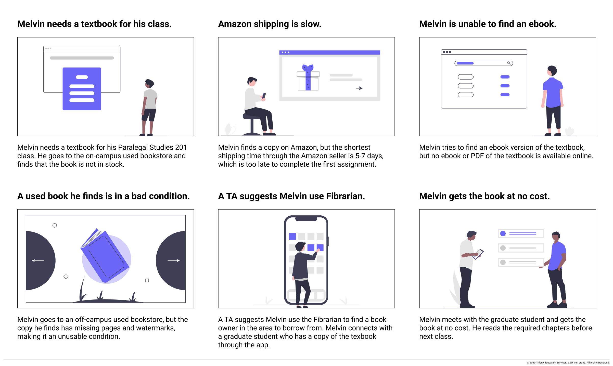
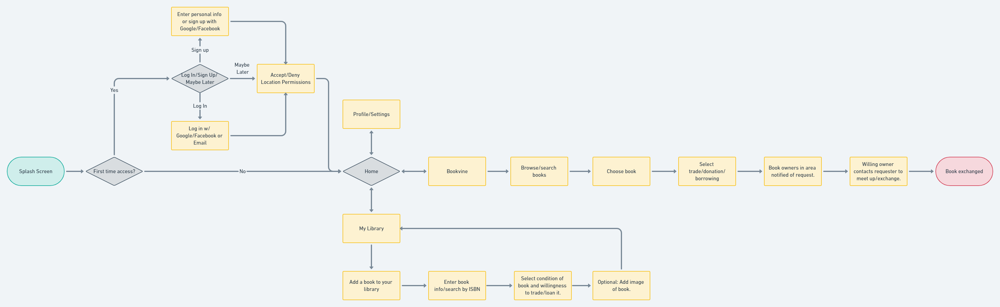
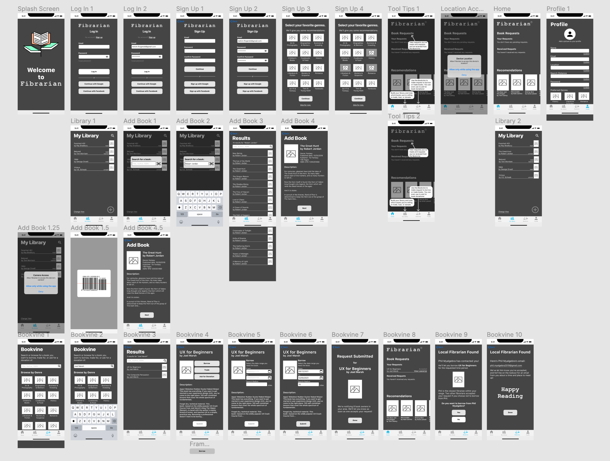

Copyright © 2021

Project Overview: Libraries are great resources, but not all libraries are created equal and not every book is in every library. An innovative book trading startup has a goal to build a mobile app that helps readers and book-lovers connect and exchange books. Books are expensive; not everyone has the space to store large collections. Fibrarian's goal is to increase access to books and information that some don't have and others want to share.
My Role: User Researcher, UX Designer, Team Work
Tools: Miro, Figma, Trello, Google Suite
After some initial discussion, we started with a proto-persona to identify potential user needs and goals, define user pain points and frustrations, and determine what kind of questions we would like to ask in our user research.
We conducted 5 user interviews to gather information about: 1) where our potential users obtain books, 2) what factors impact book purchasing, 3) how they feel about trading their own books, and 4) what pain points they have.
We compiled the findings from the user interviews into a Miro board and created an affinity diagram by categorizing key points into groups. We found that our potential users: 1) often buy used books online through Amazon, 2) think that new books are expensive, and 3) consider book conditions before they purchase a used book
The user persona, Melvin Fitzgerald, works as a paralegal intern and studies law at Emory University in Atlanta, GA. Due to the price of college textbooks, Melvin wants to buy used instead of new. He lives on-campus in a dormitory, so he has limited space to store books. He wants to find and obtain cheaper books, both leisure and textbooks, that are within his budget, and connect with other readers who have similar interests to build a reading community.
The storyboard shows Melvin in the process of trying to get a textbook for class at a price that fits within his budget and within a limited timeframe. The flow that was derived from that was built on the recurring idea theme found in our user research about the delays that can exist when attempting to obtain a used book.
Additionally, we wanted to include the My Library feature in the user flow because of how it impacts the Bookvine feature, since the condition of the book was important to interviewees; we wanted to make sure there was a way to show the condition of a book, not just through words but also through images.
Below are the hand-drawn sketches of Fibrarian’s home screen each of us three had in mind. These helped get a better vision of what we wanted on the home screen and what was ultimately going to be most convenient to the user. The one on the right is what the home screen we decided on. We put all of our sketches on the team Miro board to help us figure out how we wanted the entire wireframe and prototype look and feel.
We found that users did not know how far away potential loaners were from them. Therefore, we prompted the user with a question of what their maximum search radius was so they have an idea of their proximity to potential loaners.
- Wireframe the Bookvine feature from the lender's perspective.
- Iterate the final portion of the Bookvine feature to include being able to revisit contact information.
- Build out and iterate on the Profile section of the app.
- Add a feature to facilitate a social media aspect to foster the development of reading communities.
- Allow users to access various libraries of followed/friends.
- Work in tandem with libraries/schools/local book clubs to foster an inclusive environment for book-sharing and access.
Copyright © 2021